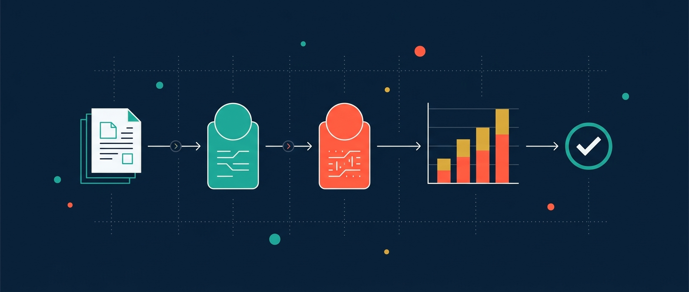
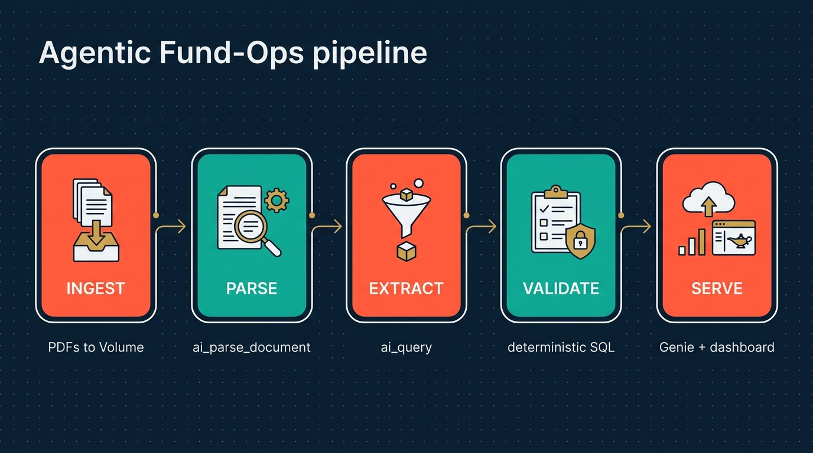
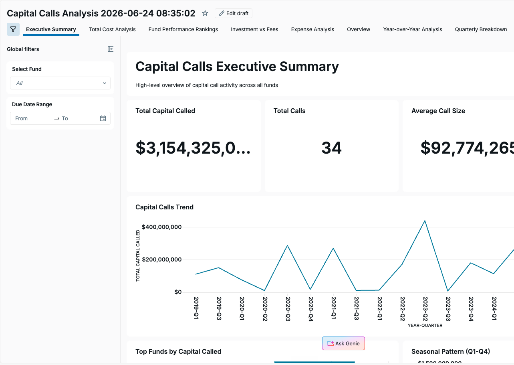
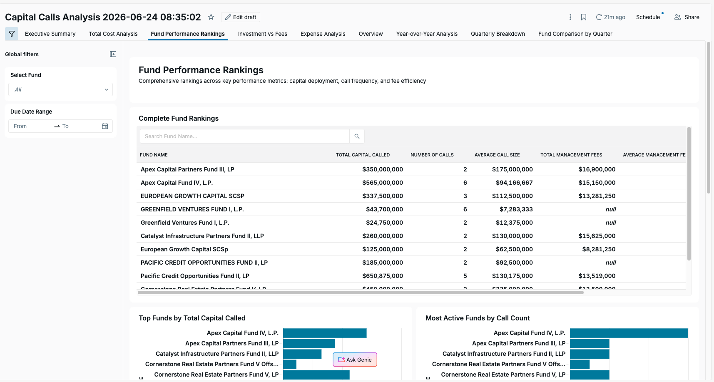
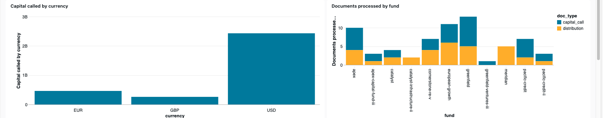

Messy fund PDFs → governed, validated, queryable data.
An AI agent parses capital-call and distribution notices, extracts structured fields with an LLM, gates the model with deterministic arithmetic, and lands governed Delta tables — then serves them through Genie, dashboards and an MLflow eval. Built end-to-end on Databricks.
100% synthetic data · a hands-on demonstration, not a production system.

How it works
Five set-based stages over native Databricks AI Functions — the model handles judgment, deterministic SQL handles trust.

ai_parse_documentEvery PDF → text in one warehouse query.
ai_queryStructured JSON into typed columns, schema-driven.
ai_classifyDoc-type routing, cross-checked 66/66.
deterministic SQLArithmetic reconciliation; catches what the model misses.
Genie · AI/BI · MLflowQuery, visualise, and measure the output.
The data, live
A point-in-time snapshot of the governed fund_ops.silver tables — every capital-call and distribution notice the pipeline processed.
Capital called by currency
Documents processed by fund
Distributions by type
Capital calls trend
Measure before you trust
Two native extraction strategies, scored field-by-field against 19 hand-verified gold documents. The structured ai_query approach wins decisively — and the eval harness is why we know, rather than guess.
Deterministic validation flagged 13 anomalies
Hard checks all pass; the warnings are the value — reconciliation breaks and outliers surfaced for human review.
| Document | Check | Severity |
|---|
Databricks AI/BI dashboards
Two dashboards over the same governed tables — a deep Genie-scaffolded analytical view, and the pipeline's own operational overview.
Capital Calls Analysis
Scaffolded with Databricks AI/BI + GenieNine analytical tabs — Executive Summary, Fund Performance Rankings, Year-over-Year, Quarterly Breakdown and more — with global fund and date-range filters.


Agentic Fund-Ops Overview
The pipeline's operational dashboardKPI tiles, capital-by-currency and documents-by-fund charts, and a live validation-anomalies review table — the same numbers the validation and eval stages produce.

Built with
- Unity Catalog
- ai_parse_document
- ai_query
- ai_extract
- ai_classify
- Genie
- AI/BI Dashboards
- MLflow
- Asset Bundles
- serverless SQL
- Claude Code + Databricks agent-skills